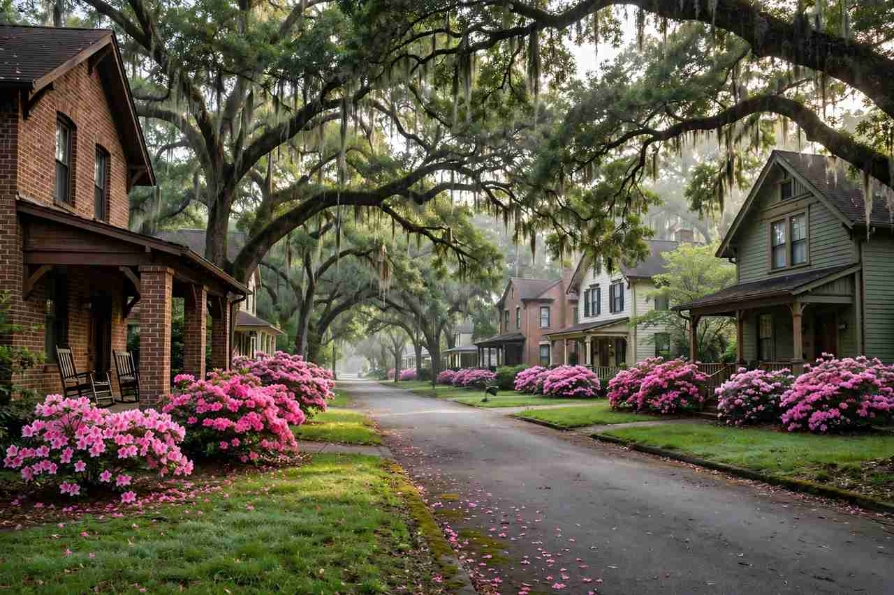

Rodent Control · Donalsonville, GA
Same-Day Rodent Control in Donalsonville, GA
Hearing scratching at night or finding droppings in Donalsonville? Murvo is a rodent-only specialist offering same-day service from local crews. We identify the species, remove the infestation, clean up the mess, and exclude rodents for good. Pricing is flat-rate and quoted in writing, the work is guaranteed in writing, and coverage extends across Seminole County for homes and businesses alike. Local crews cover 1 ZIP codes in the Donalsonville area, from Bainbridge to the far side of Seminole County.
24/7Availability
1ZIP codes covered
Same-dayResponse
Licensed · Upfront options · Written guarantees · Fully insured
Donalsonville at a glance
Local Rodent Control for Donalsonville, GA.
Seminole County
Countysouthwest Georgia
RegionColumbus · 102 mi
Nearest metro189 miles south of Atlanta
From Atlanta1
ZIP codes covered Service by service in Donalsonville
Rodent Control Services Available in Donalsonville
Thirty rodent services, one local standard in Donalsonville: inspection-led, exclusion-first, and quoted in writing before work begins. Browse the full list for Seminole County below - each section explains what the service involves here, what it typically costs nationally, and how fast we can start.
- 01Rodent Control↗
- 02Rodent Inspection↗
- 03Rodent Removal↗
- 04Rodent Exclusion↗
- 05Rodent Proofing↗
- 06Rat Control↗
- 07Mice Control↗
- 08Mouse Removal↗
- 09Rat Removal↗
- 10Rodent Trapping↗
- 11Rodent Baiting↗
- 12Rodenticide Application↗
- 13Attic Rodent Removal↗
- 14Crawl Space Rodent Removal↗
- 15Wall Rodent Removal↗
- 16Kitchen Rodent Control↗
- 17Garage Rodent Control↗
- 18Commercial Rodent Control↗
- 19Residential Rodent Control↗
- 20Emergency Rodent Removal↗
- 21Same-Day Rodent Control↗
- 22Rodent Damage Repair↗
- 23Rodent Waste Cleanup↗
- 24Rodent Disinfection↗
- 25Rodent Odor Removal↗
- 26Dead Rodent Removal↗
- 27Rodent Dropping Cleanup↗
- 28Rodent Exclusion for Roofs↗
- 29Rodent Exclusion for Vents↗
- 30Rodent Exclusion for Chimneys↗
Rodent Control in Donalsonville
Rodent Control in Donalsonville
A single mouse sighting in a Donalsonville kitchen rarely means a single mouse. Rodents breed fast, contaminate food areas, and gnaw wiring long before the damage is obvious. Murvo responds with same-day appointments where available, a background-checked local crew, and a coordinated program of trapping, exclusion, cleanup guidance, and monitoring that keeps working after the first visit ends.
In Donalsonville, rodent control is not a generic spray-and-go service. Rodents exploit rooflines and eaves, attic vents, crawlspace doors and vents, and gaps where tree limbs touch the roof in bungalows and ranch homes with crawlspaces, historic homes, and suburban homes under mature tree canopy, and a fix that ignores those routes does not last. Murvo's Donalsonville team inspects first, shows you the evidence - droppings, gnaw marks, entry gaps - and then lays out the work with a flat-rate written quote. We serve all of Seminole County from Donalsonville, including Iron City, Jakin, and every job is covered by our written workmanship guarantee. Coverage for rodent control spans 1 ZIP codes in Seminole County, including 39845.
Our process follows five stages: Inspect, Remove, Exclude, Clean, and Monitor. Active animals are cleared with targeted trapping matched to the species, then openings around pipes, vents, and rooflines are sealed with copper mesh, hardware cloth, and metal flashing. Contaminated areas are cleaned safely, and monitoring visits confirm activity has stopped before we sign the job off. A technician first checks the attic, crawl space, garage, and kitchen, recording droppings, nests, gnaw marks, and entry gaps with photos. You approve every stage in advance, in writing.
Getting started takes one conversation, day or night, because our lines stay open 24/7. We book a window that suits your household, confirm access needs in advance, and arrive prepared. Work proceeds only after your approval, in stages you can follow, and a final walkthrough reviews every seal and every monitoring result before sign-off. Questions after sign-off are welcome at any hour, and the same written record helps any technician pick up your case immediately.
Need help quickly in Donalsonville? Call any time — the emergency line is staffed 24/7, and same-day rodent control appointments are available in most areas. We inspect first, explain the plan in plain language, and put the flat rate in writing before work starts. If you are seeing signs now, an inspection this week is the fastest way to know which situation you are in.
Murvo does not quote rodent control sight unseen, because species, activity, and sealing needs change the work involved. After inspection you get one flat-rate written quote, and that is the figure you pay. As national context only, Angi's 2026 figures put rat and mouse removal and control at an average of $396, with a typical range of $189 to $655 — a benchmark, not a Murvo price.
Rodent Inspection in Donalsonville
Rodent Inspection in Donalsonville
In bungalows and ranch homes with crawlspaces, historic homes, and suburban homes under mature tree canopy, the gap that matters is seldom the gap you can see. Rodents enter through rooflines and eaves, attic vents, crawlspace doors and vents, and gaps where tree limbs touch the roof and travel hidden routes, so a rodent inspection in Seminole County has to look behind, above, and below. Our technicians trace those routes systematically and explain, in plain language, which findings demand action now.
In Donalsonville, rodent inspection is not a generic spray-and-go service. Rodents exploit rooflines and eaves, attic vents, crawlspace doors and vents, and gaps where tree limbs touch the roof in bungalows and ranch homes with crawlspaces, historic homes, and suburban homes under mature tree canopy, and a fix that ignores those routes does not last. Murvo's Donalsonville team inspects first, shows you the evidence - droppings, gnaw marks, entry gaps - and then lays out the work with a flat-rate written quote. We serve all of Seminole County from Donalsonville, including Iron City, Jakin, and every job is covered by our written workmanship guarantee. Coverage for rodent inspection spans 1 ZIP codes in Seminole County, including 39845.
The inspection starts outside, where we check the foundation, siding, pipe penetrations, garage doors, and roof junctions, because mice can squeeze through a gap the width of a pencil. We also note where bungalows and ranch homes with crawlspaces, historic homes, and suburban homes under mature tree canopy create hidden routes through rooflines and eaves, attic vents, crawlspace doors and vents, and gaps where tree limbs touch the roof. Inside, we examine the attic, crawl space, insulation, stored items, and food areas for droppings, nests, rub marks, and gnaw damage. Every finding is photographed and explained, and recommendations are marked urgent or preventive so you can stage the work sensibly.
Booking a rodent inspection in Donalsonville takes one call, and same-day appointments are often available. Nothing proceeds without your approval, and urgent items are clearly flagged. Your technician arrives on time, walks the property with you, and inspects the attic, crawl space, and exterior in one visit. Findings are explained with photos before you receive a flat-rate written quote for any recommended work. You keep the full written report either way.
You do not have to wait days for answers in Donalsonville. Same-day rodent inspection appointments are available in most areas, urgent calls are taken 24/7, and most home inspections take under an hour. You finish the visit with photos, written findings, and flat-rate pricing for anything we recommend. That is also why Murvo pairs removal with exclusion in Donalsonville - treating the animal without closing rooflines and eaves, attic vents, crawlspace doors and vents, and gaps where tree limbs touch the roof rarely lasts.
Your exact rodent inspection price is confirmed before we visit, and any follow-up work is quoted as a flat rate in writing after the inspection — no hourly billing. For context, Angi's 2026 data puts a professional rodent inspection nationally at $100 to $200, often credited toward the job if you proceed.
Rodent Removal in Donalsonville
Rodent Removal in Donalsonville
Removal works best when it is species-specific. In Donalsonville, bungalows and ranch homes with crawlspaces, historic homes, and suburban homes under mature tree canopy give Roof rat (Rattus rattus) and Norway rat (Rattus norvegicus) warm voids, stored food, and quiet nesting corners reached through rooflines and eaves, attic vents, crawlspace doors and vents, and gaps where tree limbs touch the roof. Our licensed, insured technicians assess numbers and access routes first, then set traps on proven runways and return on schedule until catches fall to zero and monitoring stays clear.
When you need rodent removal in Donalsonville, the job starts with what is actually happening in your part of Seminole County. Murvo crews work Donalsonville every week, so they know how Roof rat (Rattus rattus) and Norway rat (Rattus norvegicus) behave around bungalows and ranch homes with crawlspaces, historic homes, and suburban homes under mature tree canopy here - and where they get in: rooflines and eaves, attic vents, crawlspace doors and vents, and gaps where tree limbs touch the roof. We arrive equipped for the full job, confirm the flat rate in writing before work begins, and cover the whole Donalsonville area, including Iron City, Jakin. No call-center runaround and no open-ended hourly billing - just a local crew, a clear plan, and a written quote you approve first. Seasonal timing matters for rodent removal in Donalsonville: Rodents are most active in Donalsonville from September through February.
We favor trap-based, no-poison removal first where practical, which is safer around children and pets and avoids animals dying in hidden voids. Dead animals in inaccessible places are located and retrieved before odor develops, contaminated nesting material is removed, and sealing recommendations are prioritized so the route indoors closes permanently. Traps are matched to the species and setting, placed where droppings and rub marks show real travel routes, then cleared and reset until numbers reach zero. Monitoring then confirms the home stays clear.
Once you book rodent removal in Donalsonville, we agree a time window and your technician arrives with traps, protective equipment, and a clear plan. Progress is photographed and shared with you throughout the program. The first visit confirms activity and sets traps; return visits clear and reset them on schedule. When catches reach zero, we walk through the results, discuss sealing, and confirm your written guarantee before closing the job. Nothing is left unexplained.
When rodents are active indoors in Donalsonville, waiting rarely helps. Rodent removal can usually start the same day you call, our line answers 24/7 for a rodent loose in a living area, and the first visit sets traps straight away. Scheduled returns then clear and reset them until monitoring shows the home is clear. The written quote for your Donalsonville property will spell out exactly which of these applies before any work starts.
How many animals are active, which species they are, and how much sealing follows removal all shape the price, so we assess first and then quote one flat rate in writing. Angi's 2026 national context — an average of $396 and a typical $189 to $655 range for rat and mouse removal — is provided for comparison only; your written quote is the exact Murvo figure.
Rodent Exclusion in Donalsonville
Rodent Exclusion in Donalsonville
In bungalows and ranch homes with crawlspaces, historic homes, and suburban homes under mature tree canopy, exclusion is detective work as much as building work. Rub marks at rooflines and eaves, attic vents, crawlspace doors and vents, and gaps where tree limbs touch the roof, droppings below a vent, and daylight under a door each point somewhere different in Seminole County homes. Our technicians follow those clues for Roof rat (Rattus rattus) and Norway rat (Rattus norvegicus), prioritize active openings, and leave inactive weaknesses clearly noted.
In Donalsonville, rodent exclusion is not a generic spray-and-go service. Rodents exploit rooflines and eaves, attic vents, crawlspace doors and vents, and gaps where tree limbs touch the roof in bungalows and ranch homes with crawlspaces, historic homes, and suburban homes under mature tree canopy, and a fix that ignores those routes does not last. Murvo's Donalsonville team inspects first, shows you the evidence - droppings, gnaw marks, entry gaps - and then lays out the work with a flat-rate written quote. We serve all of Seminole County from Donalsonville, including Iron City, Jakin, and every job is covered by our written workmanship guarantee. Seasonal timing matters for rodent exclusion in Donalsonville: Rodents are most active in Donalsonville from September through February.
Before any sealing, active rodents are cleared with trapping so nothing is trapped inside the structure. Because exclusion removes the route in rather than relying on chemicals, it reduces the need for rodenticides and supports pet-safe, no-poison control. A final walkthrough shows you every protected opening, and monitoring checks confirm no new activity appears at sealed points. We then work opening by opening around rooflines and eaves, attic vents, crawlspace doors and vents, and gaps where tree limbs touch the roof, rooflines, and utility penetrations, photographing each finished seal. Every seal is listed on your written guarantee.
Before sealing day, confirm pets are secured and access to the roofline and foundation is clear. The crew then works through the agreed list, checks that no animals remain inside, and fits each seal cleanly. Afterwards you receive the photographs, the guarantee, and a date for the follow-up check that confirms everything is holding as intended. If monitoring ever finds fresh activity at a sealed point, that written inventory tells us exactly what to inspect first.
The first step is a survey, and in Donalsonville we can often schedule that survey the same day you call about rodent exclusion. Sealing follows once active animals are cleared — nothing is ever sealed inside — and most homes are fully sealed within days, with entry points near wiring or food areas handled first. A Donalsonville inspection confirms it on site - dropping size, gnaw marks, and entry points tell the story quickly.
After the survey of your Donalsonville home, every opening that needs sealing is listed and priced as one flat-rate written quote, so you pay only for the work your property needs. For national context, Angi's 2026 data puts basic exclusion at $200 to $600 depending on access and the number of openings; that benchmark is not a Murvo price.
Rodent Proofing in Donalsonville
Rodent Proofing in Donalsonville
Proofing matters most where rodent pressure stays high all year: older bungalows and ranch homes with crawlspaces, historic homes, and suburban homes under mature tree canopy in Donalsonville, homes near fields, water, or dense vegetation, and properties with cluttered garages or overhanging branches. Our plan separates quick wins you can handle yourself from specialist sealing that needs professional materials, keeping the whole program practical, transparent, and easy to stage over time.
When you need rodent proofing in Donalsonville, the job starts with what is actually happening in your part of Seminole County. Murvo crews work Donalsonville every week, so they know how Roof rat (Rattus rattus) and Norway rat (Rattus norvegicus) behave around bungalows and ranch homes with crawlspaces, historic homes, and suburban homes under mature tree canopy here - and where they get in: rooflines and eaves, attic vents, crawlspace doors and vents, and gaps where tree limbs touch the roof. We arrive equipped for the full job, confirm the flat rate in writing before work begins, and cover the whole Donalsonville area, including Iron City, Jakin. No call-center runaround and no open-ended hourly billing - just a local crew, a clear plan, and a written quote you approve first. In Donalsonville, rodent proofing calls most often involve bungalows and ranch homes with crawlspaces, historic homes, and suburban homes under mature tree canopy, where rooflines and eaves, attic vents, crawlspace doors and vents, and gaps where tree limbs touch the roof decide whether the fix holds.
Proofing divides naturally into structure, surroundings, and habits. Structure means sealing utility entries, screening vents and chimneys, and fitting sweeps where doors leak light. Surroundings means trimming branches back from the roofline, moving clutter and timber away from walls, and reducing sheltered harborage. Habits means securing pet food, bird seed, and stored produce so the property stops advertising itself. Technicians assess all three layers in one survey and rank the combined findings by impact, not by what is easiest to sell.
Arrange a survey at a time that suits you; there is no emergency, so scheduling stays relaxed. You then receive a written quote separating essential work from optional improvements, and nothing proceeds without your say-so. Your technician walks every side of the property with you, photographs weak points, and talks through the plan in plain language. Staging the work is fine; essential sealing can proceed first while optional improvements wait until a season or budget that suits you better.
Rodent proofing is preventive, so there is rarely a rush, but surveys in Donalsonville can often be arranged the same day you call, and always within a few days. Most proofing work is completed in a single visit once you approve the plan, and booking before colder weather gives your home protection ahead of the seasonal rush indoors. A Donalsonville inspection confirms it on site - dropping size, gnaw marks, and entry points tell the story quickly.
We survey your Donalsonville property first, separate the quick wins you can handle yourself from the specialist sealing, and quote the professional work as one flat rate in writing so spending can be staged. Angi's 2026 national context puts exclusion, the core of proofing, at $200 to $600 for basic work — a benchmark only, not a Murvo price.
Rat Control in Donalsonville
Rat Control in Donalsonville
Most Donalsonville rat calls start with evidence in the attic: droppings too large for mice, greasy rub marks, insulation tunneled overnight. Murvo identifies whether Roof rat (Rattus rattus) or Norway rat (Rattus norvegicus) is responsible, maps nightly routes, and builds control around trapping and exclusion. One flat-rate written quote is approved before work begins.
In Donalsonville, rat control is not a generic spray-and-go service. Rodents exploit rooflines and eaves, attic vents, crawlspace doors and vents, and gaps where tree limbs touch the roof in bungalows and ranch homes with crawlspaces, historic homes, and suburban homes under mature tree canopy, and a fix that ignores those routes does not last. Murvo's Donalsonville team inspects first, shows you the evidence - droppings, gnaw marks, entry gaps - and then lays out the work with a flat-rate written quote. We serve all of Seminole County from Donalsonville, including Iron City, Jakin, and every job is covered by our written workmanship guarantee. Coverage for rat control spans 1 ZIP codes in Seminole County, including 39845.
Control starts with species and route identification, because roof rats and Norway rats behave and enter very differently. Technicians pre-bait unset traps along proven runways so wary rats feed confidently, then set them and return to check, clear, and adjust placements until activity stops. Trapped rats are removed hygienically, and each visit is documented with locations and counts. We then pair the program with roofline and entry-point exclusion, plus attic removal and cleanup where nests are found overhead. Progress is visible at every visit.
Call and describe where signs are strongest; that directs the first inspection. Your technician maps routes and harborage, explains the pre-baiting plan honestly, including why results build over days, and provides the written quote. Approval starts the program the same visit, with follow-up checks booked ahead so momentum never depends on you calling back. You will know after each visit what was caught, where placements changed, and what the next check is specifically looking for.
Call day or night — urgent rat control calls in Donalsonville are answered 24/7, and a same-day inspection can usually start the program. Pre-baiting begins on that first visit once you approve the written quote, traps are set when rats are feeding confidently, and scheduled checks continue until activity stops. Around Donalsonville, bungalows and ranch homes with crawlspaces, historic homes, and suburban homes under mature tree canopy give rodents the most cover, which is why entry points get checked before traps are set.
Species, colony size, and the number of entry points to seal all affect rat work, which is why Murvo inspects first and quotes one flat rate in writing. Angi's 2026 figures, given for national context only, average rat control and removal at $396 and typically run $189 to $655; the written quote for your Donalsonville home is the exact price.
Mice Control in Donalsonville
Mice Control in Donalsonville
How many mice does one sighting usually mean? More than one, and the colony grows while treatment waits. Murvo builds mice control around trapping and sealing rather than bait, uses licensed, insured technicians, and confirms the result with follow-up monitoring, so a quiet week is verified instead of simply hoped for.
In Donalsonville, mice control is not a generic spray-and-go service. Rodents exploit rooflines and eaves, attic vents, crawlspace doors and vents, and gaps where tree limbs touch the roof in bungalows and ranch homes with crawlspaces, historic homes, and suburban homes under mature tree canopy, and a fix that ignores those routes does not last. Murvo's Donalsonville team inspects first, shows you the evidence - droppings, gnaw marks, entry gaps - and then lays out the work with a flat-rate written quote. We serve all of Seminole County from Donalsonville, including Iron City, Jakin, and every job is covered by our written workmanship guarantee. Coverage for mice control spans 1 ZIP codes in Seminole County, including 39845.
Our integrated approach favors trapping and sealing over baits, with genuinely pet-safe options for family homes. Food-storage advice removes the attraction that drew mice in, and sealing is completed as whole-home proofing so kitchens, attics, and voids stay clear after the program ends. Droppings in cabinets are never dry-swept; following CDC guidance, surfaces are disinfected first so contamination is not spread into the air, and nesting debris is bagged and removed. Catch records show exactly how numbers fall each visit.
During the program, store opened food in sealed containers and keep trap areas undisturbed. At the end you review the catch record together, receive prevention advice, and confirm the written guarantee before close. Your background-checked technician returns to clear and reset clusters, adjusts placements if the pattern shifts, and completes sealing once numbers fall. Prevention notes cover the exact storage and sealing issues found at your home, making them practical rather than generic advice.
Mice multiply fast, so mice control in Donalsonville is built to start fast too: a survey can often be arranged the same day you call, with traps set on that first visit once the quote is approved. Because mice investigate new objects quickly, catches usually begin soon after, and check visits follow until a final confirmation shows activity has stopped. If you are seeing signs now, an inspection this week is the fastest way to know which situation you are in.
The number of rooms affected and the amount of sealing required set the price, so Murvo surveys first and quotes one flat rate in writing. For national context only, Angi's 2026 data averages rat and mouse control and removal at $396, typically $189 to $655 — not a Murvo price; your written quote is exact.
Mouse Removal in Donalsonville
Mouse Removal in Donalsonville
Mice nest where it is warm and undisturbed: attics, wall voids, crawl spaces, and behind kitchen cabinets in bungalows and ranch homes with crawlspaces, historic homes, and suburban homes under mature tree canopy across Donalsonville. They feed close to those nests, following rooflines and eaves, attic vents, crawlspace doors and vents, and gaps where tree limbs touch the roof and pipe runs between rooms. Our technicians check warm spots near water heaters and appliances where mice raise young, so no nesting site is missed during removal.
Homeowners in Donalsonville call Murvo for mouse removal because the problem here is specific: Roof rat (Rattus rattus) pressure around bungalows and ranch homes with crawlspaces, historic homes, and suburban homes under mature tree canopy, tight access at rooflines and eaves, attic vents, crawlspace doors and vents, and gaps where tree limbs touch the roof, and activity that follows the local season. Our Seminole County crews diagnose the real source before recommending work, explain the options in plain language, and quote one flat rate in writing. Across Donalsonville - including Iron City, Jakin - every visit is backed by licensed, insured technicians and our written workmanship guarantee. The Donalsonville crews who handle mouse removal also handle the follow-through - proofing, cleanup, and monitoring - so one visit can close the whole problem.
Trap-based removal is the default here for practical reasons. It is safer around children and pets, results are visible and countable, and no animal is left to die inside a hidden void. Cleanup follows the same care: droppings and nesting are never dry-swept, surfaces are disinfected first, and waste is bagged and removed hygienically. Once activity ends, access points are sealed thoroughly, and advice on storage and scent-trail cleaning helps the kitchen stay clear. Monitoring after sealing confirms the finish, so the result rests on evidence rather than a hopeful guess.
For urgent mouse problems in Donalsonville, contact Murvo for a same-day response where available. The final visit confirms the result and your written workmanship guarantee. Your technician surveys the home, explains the multi-trap plan, and confirms a flat-rate written quote before starting. Return visits are scheduled to clear and reset traps, and cleanup and sealing follow once catches reach zero. You are updated after every visit, without ever chasing us.
For mice active in kitchens or living areas of your Donalsonville home, mouse removal can often begin the same day you call. That first visit surveys nesting sites and sets traps as soon as you approve the quote, and because mice investigate traps quickly, catches usually start fast. Return visits continue until numbers reach zero. That is also why Murvo pairs removal with exclusion in Donalsonville - treating the animal without closing rooflines and eaves, attic vents, crawlspace doors and vents, and gaps where tree limbs touch the roof rarely lasts.
Mouse removal cost reflects the number of rooms involved and how much sealing is needed, which is why Murvo surveys first and quotes a flat rate in writing. For national context only, Angi's 2026 data averages rat and mouse removal at $396, typically $189 to $655. That benchmark is not a Murvo price; your written quote covers your exact program.
Rat Removal in Donalsonville
Rat Removal in Donalsonville
Roof rats and Norway rats behave and enter very differently, and in Donalsonville the distinction decides where traps go and which gaps get sealed. bungalows and ranch homes with crawlspaces, historic homes, and suburban homes under mature tree canopy reached through rooflines and eaves, attic vents, crawlspace doors and vents, and gaps where tree limbs touch the roof can hide attic colonies or basement harborage for months. Our licensed, background-checked technicians trace the full route, remove the colony, and sanitize contaminated areas where nests were found.
In Donalsonville, rat removal is not a generic spray-and-go service. Rodents exploit rooflines and eaves, attic vents, crawlspace doors and vents, and gaps where tree limbs touch the roof in bungalows and ranch homes with crawlspaces, historic homes, and suburban homes under mature tree canopy, and a fix that ignores those routes does not last. Murvo's Donalsonville team inspects first, shows you the evidence - droppings, gnaw marks, entry gaps - and then lays out the work with a flat-rate written quote. We serve all of Seminole County from Donalsonville, including Iron City, Jakin, and every job is covered by our written workmanship guarantee. Coverage for rat removal spans 1 ZIP codes in Seminole County, including 39845.
Removal stays trap-led and exclusion-backed throughout. After clearance, contaminated areas are sanitized carefully, with surfaces disinfected before cleaning and droppings never dry-swept. Monitoring devices and a documented final walkthrough then prove activity has ended, and proofing advice covers drains, vents, and rooflines going forward. Locked bait stations appear only where a site genuinely justifies them, positioned away from pets and food, labeled, and monitored on schedule; loose bait is never used. That written evidence stays with you, including the monitoring readings that supported the decision to sign off.
After booking, we confirm access needs for the attic, basement, or outbuildings so no time is wasted. Follow-up visits run on schedule until catches stop, then sealing and sanitation are completed. A final monitoring period confirms the home is clear before sign-off. On the first visit, your background-checked technician sets out the plan and begins pre-baiting once you approve the written quote. Progress is reported to you after every single visit.
In Donalsonville, rat removal can usually start the same day you call, with 24/7 answering for rats active in living areas. Pre-baiting begins on the first visit after you approve the written quote, and traps are set once rats feed confidently, typically within days. Repeat visits then run frequently until monitoring confirms the colony is gone. Murvo's Donalsonville crews explain the finding either way, and the flat-rate quote leaves the decision with you.
Colony size, access, and the sealing needed afterwards drive the price, so Murvo assesses the property first and quotes a flat rate in writing covering the full program. Angi's 2026 data, for national context only, averages rat removal at $396 and typically ranges from $189 to $655; that is a benchmark, not a Murvo price.
Rodent Trapping in Donalsonville
Rodent Trapping in Donalsonville
Trapping is the most accountable way to clear rodents: every catch is counted, located, and recorded. Murvo's rodent trapping in Donalsonville places traps perpendicular to walls and along beams, pipes, and fence lines where rodents actually travel, using snap traps, multi-catch devices, or live-capture options as the situation requires. You approve one flat-rate written quote before we start.
In Donalsonville, rodent trapping is not a generic spray-and-go service. Rodents exploit rooflines and eaves, attic vents, crawlspace doors and vents, and gaps where tree limbs touch the roof in bungalows and ranch homes with crawlspaces, historic homes, and suburban homes under mature tree canopy, and a fix that ignores those routes does not last. Murvo's Donalsonville team inspects first, shows you the evidence - droppings, gnaw marks, entry gaps - and then lays out the work with a flat-rate written quote. We serve all of Seminole County from Donalsonville, including Iron City, Jakin, and every job is covered by our written workmanship guarantee. Homes near Bainbridge tend to show activity first in Donalsonville, which is why inspections start with rooflines and eaves, attic vents, crawlspace doors and vents, and gaps where tree limbs touch the roof.
Trap selection covers snap traps for quick, humane dispatch, multi-catch devices for busy mouse routes, and live-capture options where you prefer release away from the home. As catches fall, we recommend exclusion sealing, plus droppings cleanup for affected areas, moving the program from active trapping to monitoring and final sign-off. Baits and lures are matched to species and location, and all devices are positioned with pet and child safety in mind and explained to your household. Every device location is mapped for you.
Call to book, and a first visit can often happen the same day. That visit maps activity, places or pre-baits devices, and produces your written quote for the full program including checks. Nothing proceeds without approval. Scheduled returns then clear, reset, and record catches, sharing the running total with you at every single visit. Catch records are never an afterthought; they are the evidence that decides when trapping ends and monitoring alone takes over.
In Donalsonville, a rodent trapping program can usually start the same day you call, with traps placed or pre-baiting begun on the first visit after you approve the quote. Mice often investigate within the first night, while wary rats need a few days of pre-baiting before traps are set. Scheduled checks then keep the program moving until numbers reach zero. Murvo's Donalsonville crews explain the finding either way, and the flat-rate quote leaves the decision with you.
Trapping is usually quoted as part of a complete removal program rather than by the trap, and the price depends on species, activity level, and how many check visits are needed. Murvo inspects first and quotes one flat rate in writing covering the program and its check visits, so there are no per-visit surprises and no hourly billing at any stage.
Rodent Baiting in Donalsonville
Rodent Baiting in Donalsonville
Most Donalsonville baiting requests start with returning droppings outdoors, around garages, sheds, or fence lines. Murvo answers carefully: activity is mapped first, trapping and exclusion come first, and any stations used are locked and tamper-resistant. One flat-rate written quote covers placement, monitoring, and eventual removal of every station.
When you need rodent baiting in Donalsonville, the job starts with what is actually happening in your part of Seminole County. Murvo crews work Donalsonville every week, so they know how Roof rat (Rattus rattus) and Norway rat (Rattus norvegicus) behave around bungalows and ranch homes with crawlspaces, historic homes, and suburban homes under mature tree canopy here - and where they get in: rooflines and eaves, attic vents, crawlspace doors and vents, and gaps where tree limbs touch the roof. We arrive equipped for the full job, confirm the flat rate in writing before work begins, and cover the whole Donalsonville area, including Iron City, Jakin. No call-center runaround and no open-ended hourly billing - just a local crew, a clear plan, and a written quote you approve first. The Donalsonville crews who handle rodent baiting also handle the follow-through - proofing, cleanup, and monitoring - so one visit can close the whole problem.
Where baiting is not appropriate indoors, we say so, and recommend trapping first followed by proofing of gaps around pipes, vents, and doors. That exclusion-first approach reduces reliance on bait over time, which matters for households with children, pets, or visiting wildlife in Donalsonville. Consumption records from each visit show whether activity is falling, holding, or moving, guiding whether stations stay, move, or come out entirely in favor of sealing and trapping alone. You receive those records after every monitoring visit.
During monitoring, keep station areas undisturbed and tell us about any change in droppings or sightings. Your technician checks consumption on schedule, reports the trend plainly, and adjusts or removes stations as evidence dictates. The program closes with stations out, sealing recommendations confirmed, and the full record, including photographs, left with you in writing. If your household circumstances change, tell us; station locations and the wider plan can be reviewed and adjusted at the next check.
In Donalsonville, rodent baiting starts with an inspection visit we can often arrange the same day you call. Stations are only placed after activity is mapped and you approve the written quote and each location, so setup is deliberate rather than rushed. Monitoring visits then run on a fixed schedule until consumption stops and activity is confirmed clear. A Donalsonville inspection confirms it on site - dropping size, gnaw marks, and entry points tell the story quickly.
Baiting cost depends on how many locked stations your property needs and how long monitoring runs, so Murvo inspects and maps activity first, then quotes one flat rate in writing covering placement and scheduled checks. There are no per-visit surprises, and because our approach is exclusion-first, the goal is always to reduce and eventually remove stations, not maintain them forever.
Rodenticide Application in Donalsonville
Rodenticide Application in Donalsonville
Rodenticides are powerful products that can harm pets, children, and wildlife if misused, so Murvo treats rodenticide application in Donalsonville as a last resort, never a first step. Products are placed only inside tamper-resistant locked stations, never as loose pellets or open trays, and only after inspection confirms trapping and exclusion alone will not solve the problem.
When you need rodenticide application in Donalsonville, the job starts with what is actually happening in your part of Seminole County. Murvo crews work Donalsonville every week, so they know how Roof rat (Rattus rattus) and Norway rat (Rattus norvegicus) behave around bungalows and ranch homes with crawlspaces, historic homes, and suburban homes under mature tree canopy here - and where they get in: rooflines and eaves, attic vents, crawlspace doors and vents, and gaps where tree limbs touch the roof. We arrive equipped for the full job, confirm the flat rate in writing before work begins, and cover the whole Donalsonville area, including Iron City, Jakin. No call-center runaround and no open-ended hourly billing - just a local crew, a clear plan, and a written quote you approve first. Homes near Bainbridge tend to show activity first in Donalsonville, which is why inspections start with rooflines and eaves, attic vents, crawlspace doors and vents, and gaps where tree limbs touch the roof.
Application begins with a thorough inspection to confirm species and activity levels and to decide whether rodenticide is needed at all; often, professional trapping plus controlled outdoor baiting is enough, and if trapping alone can solve your problem safely, that is the route we recommend first. When treatment is justified, we follow Inspect, Remove, Exclude, Clean, and Monitor: stations are mapped, labeled, anchored, and checked on schedule, with amounts recorded at every visit. Products stay inside locked stations at all times.
Before the visit, tell us about children, pets, livestock, and wildlife using the property; that information shapes product and placement decisions. Scheduled checks follow until activity ends and stations are removed. On the day, your background-checked technician installs any approved stations locked and labeled, records the details, and explains what to watch for. Label information, amounts, and visit dates stay in your records throughout, so the treatment history is complete and available whenever needed.
In Donalsonville, rodenticide application begins with an inspection we can often schedule the same day you call, because no responsible application happens without one. If treatment is justified and you approve the written quote, locked stations are installed on that visit. Monitoring then runs on schedule, and treatment stops as soon as data shows activity has ended. In Seminole County, most cases involve the Roof rat (Rattus rattus) and the Norway rat (Rattus norvegicus), so the inspection focuses on their routes first.
Application cost depends on the number of locked stations, the product required under Georgia rules, and how long monitoring runs. Murvo inspects first, explains whether trapping or exclusion could avoid chemical control entirely, and then quotes one flat rate in writing before work begins. The quote covers scheduled monitoring visits, so there are no per-visit surprises later.
Attic Rodent Removal in Donalsonville
Attic Rodent Removal in Donalsonville
Scratching overhead at night in Donalsonville usually means Roof rat (Rattus rattus) climbing to the roofline or Norway rat (Rattus norvegicus) slipping through vent gaps into your attic. Murvo's attic rodent removal inspects the attic, roof, and eaves, traps active animals up there, and seals the roofline behind them. Same-day visits are prioritized when chewed wiring is found, because that damage is a genuine fire risk.
Homeowners in Donalsonville call Murvo for attic rodent removal because the problem here is specific: Roof rat (Rattus rattus) pressure around bungalows and ranch homes with crawlspaces, historic homes, and suburban homes under mature tree canopy, tight access at rooflines and eaves, attic vents, crawlspace doors and vents, and gaps where tree limbs touch the roof, and activity that follows the local season. Our Seminole County crews diagnose the real source before recommending work, explain the options in plain language, and quote one flat rate in writing. Across Donalsonville - including Iron City, Jakin - every visit is backed by licensed, insured technicians and our written workmanship guarantee. In Donalsonville, attic rodent removal calls most often involve bungalows and ranch homes with crawlspaces, historic homes, and suburban homes under mature tree canopy, where rooflines and eaves, attic vents, crawlspace doors and vents, and gaps where tree limbs touch the roof decide whether the fix holds.
Cleanup in a contaminated attic follows CDC guidance: droppings and nesting material are never dry-swept, because that can spread contamination into the air; surfaces are disinfected first, then waste is removed hygienically by technicians in protective equipment. Our IPM approach favors trapping and exclusion over poison in attics, preventing animals dying in inaccessible voids. We also assess insulation damage and can refer repairs, check adjoining crawl spaces for connected activity, and advise on clearing roof debris. Photographs document conditions before and after work.
After booking, we confirm safe attic access and any pets or stored items to work around. On arrival, your background-checked technician inspects, explains the plan in plain language, and starts trapping once you approve the written quote. Follow-up visits are booked ahead to clear traps and complete sealing. A final monitoring check and walkthrough confirm the result before we close the job. Insulation and wiring findings are reported to you too.
Overhead scratching in Donalsonville often gets a same-day attic rodent removal visit, and attics with chewed wiring are prioritized because of the fire risk. Trapping starts on the first visit once you approve the written quote, checks run on schedule, and most attics are cleared and sealed within days. Monitoring stays in place briefly afterwards to confirm nothing remains inside. In Seminole County, activity follows the local season, so timing the work matters as much as the method.
Activity levels, roofline sealing, and whether contaminated insulation needs cleanup all affect attic pricing, so Murvo inspects first and quotes one flat rate in writing for the removal program. Cleanup options are priced separately in writing before you decide, so nothing is added once work is underway.
Crawl Space Rodent Removal in Donalsonville
Crawl Space Rodent Removal in Donalsonville
Why avoid poison beneath a home? Pets can access crawl spaces, and carcasses hidden under a house are difficult to retrieve. Murvo favors trapping and physical exclusion instead, delivered by licensed, insured technicians who photograph every sealed opening, refit access panels securely, and confirm results with monitoring under a written guarantee.
When you need crawl space rodent removal in Donalsonville, the job starts with what is actually happening in your part of Seminole County. Murvo crews work Donalsonville every week, so they know how Roof rat (Rattus rattus) and Norway rat (Rattus norvegicus) behave around bungalows and ranch homes with crawlspaces, historic homes, and suburban homes under mature tree canopy here - and where they get in: rooflines and eaves, attic vents, crawlspace doors and vents, and gaps where tree limbs touch the roof. We arrive equipped for the full job, confirm the flat rate in writing before work begins, and cover the whole Donalsonville area, including Iron City, Jakin. No call-center runaround and no open-ended hourly billing - just a local crew, a clear plan, and a written quote you approve first. Coverage for crawl space rodent removal spans 1 ZIP codes in Seminole County, including 39845.
Cleanup beneath a home follows careful practice throughout. Photographs of every finished seal accompany your guarantee paperwork, creating a record of exactly what was closed. Droppings and nesting debris are never dry-swept, since disturbing them can spread contamination; surfaces are disinfected first, then waste is bagged and removed by technicians wearing protective equipment. Technicians also trace connections upward through wall voids, checking whether activity reaches the attic, and report moisture issues with practical recommendations. Vent and pier sealing is checked from inside the space, not assumed sound from a glance outside.
Schedule an under-home inspection, usually within days and sooner when odors reach living areas. Your technician photographs conditions below, explains findings in plain language, and confirms the written quote before any trapping. Clearance, vent screening, and cleanup then follow in sequence, with monitoring left in place until the space below is confirmed quiet. Photographs from below the home accompany the final paperwork, which is especially useful because few homeowners ever see that space themselves.
For crawl space rodent removal in Donalsonville, inspections are usually arranged within a few days — and sooner when odors are drifting into living areas or activity sounds heavy. Trapping begins on the first visit after you approve the written quote, clearance and sealing follow in sequence, and monitoring stays in place until the space below is confirmed quiet. If you are seeing signs now, an inspection this week is the fastest way to know which situation you are in.
Access, the number of vents and gaps to seal, and whether waste cleanup is required all shape crawl-space pricing, so Murvo inspects first and quotes one flat rate in writing. Cleanup options are priced in writing before you decide whether to include them, and there are no surprise charges for extra vents within the agreed scope.
Wall Rodent Removal in Donalsonville
Wall Rodent Removal in Donalsonville
What should never be used inside a wall? Poison, because an animal dying in a sealed void creates the odor problem everyone fears. Murvo relies on trapping and exclusion instead, safer around children and pets, and finishes with quiet-wall checks at different times of day before declaring the void clear.
In Donalsonville, wall rodent removal is not a generic spray-and-go service. Rodents exploit rooflines and eaves, attic vents, crawlspace doors and vents, and gaps where tree limbs touch the roof in bungalows and ranch homes with crawlspaces, historic homes, and suburban homes under mature tree canopy, and a fix that ignores those routes does not last. Murvo's Donalsonville team inspects first, shows you the evidence - droppings, gnaw marks, entry gaps - and then lays out the work with a flat-rate written quote. We serve all of Seminole County from Donalsonville, including Iron City, Jakin, and every job is covered by our written workmanship guarantee. Seasonal timing matters for wall rodent removal in Donalsonville: Rodents are most active in Donalsonville from September through February.
Once the void is clear, we apply proofing to wall entry routes, sealing baseboard and pipe gaps linked to kitchen activity so the route cannot reopen. Monitoring at key access points then confirms the void stays quiet. If a rodent has died in the wall, retrieval is followed by sanitation: contaminated material is never dry-swept, surfaces are disinfected first following CDC guidance, and odor treatment is applied so other rodents are not attracted back. Connected voids are checked before we finish.
Between visits, note the times and rooms where sounds continue, since that pattern guides adjustments. Sign-off happens only when monitoring confirms silence, sealing and sanitation are complete, and your guarantee paperwork is confirmed in writing. Your background-checked technician clears traps, checks connected voids, and runs quiet checks at varied times of day. Silence is checked more than once before sign-off, because a single quiet evening can mislead when an animal simply moves elsewhere.
In Donalsonville, wall rodent removal locating visits are often available the same day you call, especially for persistent scratching keeping you awake. Trapping is set at access points on that first visit once you approve the written quote, and because rodents travel the void nightly, results usually follow within days, confirmed by quiet-wall checks before we sign off. That is also why Murvo pairs removal with exclusion in Donalsonville - treating the animal without closing rooflines and eaves, attic vents, crawlspace doors and vents, and gaps where tree limbs touch the roof rarely lasts.
How precisely the activity can be located, and whether a minimal access cut turns out to be needed, decide the price of wall work. Murvo therefore locates the activity first and quotes a flat rate in writing, covering the trapping, sealing, and monitoring in your plan, so wall access never becomes an open-ended bill.
Kitchen Rodent Control in Donalsonville
Kitchen Rodent Control in Donalsonville
Behind the stove is where the trouble usually hides. Warmth, crumbs and a drip under the sink draw Roof rat (Rattus rattus) and Norway rat (Rattus norvegicus) night after night in Donalsonville kitchens. Murvo clears the activity, blocks the gaps they travel through, and gives you a flat-rate written quote before any work begins at your home.
In Donalsonville, kitchen rodent control is not a generic spray-and-go service. Rodents exploit rooflines and eaves, attic vents, crawlspace doors and vents, and gaps where tree limbs touch the roof in bungalows and ranch homes with crawlspaces, historic homes, and suburban homes under mature tree canopy, and a fix that ignores those routes does not last. Murvo's Donalsonville team inspects first, shows you the evidence - droppings, gnaw marks, entry gaps - and then lays out the work with a flat-rate written quote. We serve all of Seminole County from Donalsonville, including Iron City, Jakin, and every job is covered by our written workmanship guarantee. In Donalsonville, kitchen rodent control calls most often involve bungalows and ranch homes with crawlspaces, historic homes, and suburban homes under mature tree canopy, where rooflines and eaves, attic vents, crawlspace doors and vents, and gaps where tree limbs touch the roof decide whether the fix holds.
Work begins with a kitchen-focused inspection behind fridges, ovens and sinks, inside cabinets and along kickboards, reading droppings and grease marks to identify the species and its routes. Discreet traps are placed away from food preparation surfaces, never loose poison where children, pets or food could reach it. We then trace activity into wall voids and adjoining rooms, seal gaps around waste pipes and cabinet holes with durable materials, disinfect contaminated areas, and monitor until activity stops completely. Nothing is left to guesswork at any stage.
After you book, a licensed, background-checked Murvo technician arrives at the agreed time and inspects behind appliances, sinks and cabinets. You receive a flat-rate written quote before anything starts. Once approved, trapping and sealing go ahead, contaminated areas are disinfected, and we explain the hygiene notes for your layout. Follow-up monitoring continues until kitchen activity stops, and the work is backed by our written workmanship guarantee. You stay informed at every stage of the work.
You can reach us by phone 24/7, and reports of droppings close to food preparation surfaces are given priority when we schedule. A same-day visit in Donalsonville may be possible in many cases, depending on technician availability. When you call, tell us what you found and we will offer the earliest appointment available. That is also why Murvo pairs removal with exclusion in Donalsonville - treating the animal without closing rooflines and eaves, attic vents, crawlspace doors and vents, and gaps where tree limbs touch the roof rarely lasts.
Cost depends on how many rodents are active, where they are entering, and how much sealing and cleanup the kitchen needs. Murvo inspects first, then gives one flat-rate written quote covering trapping, sealing and follow-up monitoring, with no hourly billing or add-on surprises. You approve the full price before any work begins, and the quote is backed by our written workmanship guarantee.
Garage Rodent Control in Donalsonville
Garage Rodent Control in Donalsonville
Scratched boxes, droppings along garage walls or a nest in stored clutter are early warnings worth acting on. Murvo inspects the whole garage in Donalsonville, removes the animals, and proof the space properly. Every job starts with a flat-rate written quote, agreed before any work begins.
Homeowners in Donalsonville call Murvo for garage rodent control because the problem here is specific: Roof rat (Rattus rattus) pressure around bungalows and ranch homes with crawlspaces, historic homes, and suburban homes under mature tree canopy, tight access at rooflines and eaves, attic vents, crawlspace doors and vents, and gaps where tree limbs touch the roof, and activity that follows the local season. Our Seminole County crews diagnose the real source before recommending work, explain the options in plain language, and quote one flat rate in writing. Across Donalsonville - including Iron City, Jakin - every visit is backed by licensed, insured technicians and our written workmanship guarantee. Seasonal timing matters for garage rodent control in Donalsonville: Rodents are most active in Donalsonville from September through February.
Door corners get checked before anything else, because daylight showing at the base often marks the main entrance. Traps sit on those travel lines, not scattered at random. Nesting comes out safely, entry points get sealed with sturdy materials, and the door sweep is addressed where it has failed. From there we follow droppings and rub marks along walls, behind storage and toward utility lines entering the house. Final monitoring tells us whether the garage is truly quiet or whether activity is still passing through.
Booking is one call. Follow-up visits check activity levels and adjust the plan if rodents are still moving. When monitoring shows the garage is clear, we close the job, with the guarantee in writing. On arrival we inspect first, explain what we found in plain language, and give one written flat-rate price for the whole plan. Traps are set, entry points sealed and contaminated material dealt with safely. Questions are answered honestly throughout, with findings in writing.
We answer calls 24/7 and treat garages with active nesting, chewed wiring or rodents moving into the house as urgent. Same-day appointments in Donalsonville are often available, depending on technician schedules. Call with a description of the signs you have seen and we will offer you the earliest visit we can. Around Donalsonville, bungalows and ranch homes with crawlspaces, historic homes, and suburban homes under mature tree canopy give rodents the most cover, which is why entry points get checked before traps are set.
Pricing depends on garage size, how established the infestation is, and how much proofing the doors and walls need. Murvo inspects first and quotes one flat rate in writing, covering trapping, nest removal, sealing and monitoring, with no hourly charges. Nothing starts until you approve that price, and the completed work is backed by our written workmanship guarantee.
Commercial Rodent Control in Donalsonville
Commercial Rodent Control in Donalsonville
Rodents threaten more than stock: they threaten licences, ratings and reputation. Murvo builds commercial programs for Donalsonville businesses around inspection, removal, exclusion and monitoring, scheduled discreetly around trading hours. You receive a flat-rate written quote for initial work and clear scheduled-service pricing afterwards. Call Murvo today for straightforward help.
In Donalsonville, commercial rodent control is not a generic spray-and-go service. Rodents exploit rooflines and eaves, attic vents, crawlspace doors and vents, and gaps where tree limbs touch the roof in bungalows and ranch homes with crawlspaces, historic homes, and suburban homes under mature tree canopy, and a fix that ignores those routes does not last. Murvo's Donalsonville team inspects first, shows you the evidence - droppings, gnaw marks, entry gaps - and then lays out the work with a flat-rate written quote. We serve all of Seminole County from Donalsonville, including Iron City, Jakin, and every job is covered by our written workmanship guarantee. Around Bainbridge, Iron City, Jakin, the pattern is similar: Norway rat (Rattus norvegicus) finds rooflines and eaves, attic vents, crawlspace doors and vents, and gaps where tree limbs touch the roof first, and lasting commercial rodent control has to close those routes.
Your program begins away from the shop floor, in the places rodents prefer: docks, plant rooms, bin stores, ceiling voids and delivery entrances. Exclusion targets dock seals, vents and service gaps. We map activity there first, then connect it to sightings inside. Monitored traps are positioned discreetly, outdoor stations stay locked, and product use is logged in full. After each visit you receive a clear report covering findings, actions and trends, written so a restaurant manager or warehouse operator can hand it straight to an auditor.
Reach out and we will arrange a survey at a time that does not disrupt trading. The surveyor walks the whole site, notes risks by area, and sends a written proposal before any work starts. Once approved, initial removal and sealing begin discreetly, with a report after every visit for your compliance file. Scheduled checks continue from there, reviews track the trend, and urgent sightings can be reported by phone at any hour, day or night.
Our commercial lines are open 24/7, and live sightings during trading hours are treated as emergencies and handled discreetly. Response in Donalsonville depends on technician availability, but we will always offer the earliest visit we can and advise on immediate steps to protect stock, customers and your audit position. In Seminole County, activity follows the local season, so timing the work matters as much as the method.
Commercial pricing depends on site size, sector, activity levels and how much exclusion and monitoring the site needs. Restaurants, warehouses and food premises are scoped individually after a survey. Murvo quotes a flat rate in writing for initial work, or a clear scheduled-service price for ongoing programs, before anything begins. There are no vague charges, and reports are included for your audit file.
Residential Rodent Control in Donalsonville
Residential Rodent Control in Donalsonville
Scratching above the ceiling rarely stays an attic-only problem. Rodents move through voids, drop into kitchens and nest where the house is warmest. Murvo's residential rodent control in Donalsonville treats the whole property as one system, and you receive a flat-rate written quote after inspection, before removal, sealing or cleanup work begins.
In Donalsonville, residential rodent control is not a generic spray-and-go service. Rodents exploit rooflines and eaves, attic vents, crawlspace doors and vents, and gaps where tree limbs touch the roof in bungalows and ranch homes with crawlspaces, historic homes, and suburban homes under mature tree canopy, and a fix that ignores those routes does not last. Murvo's Donalsonville team inspects first, shows you the evidence - droppings, gnaw marks, entry gaps - and then lays out the work with a flat-rate written quote. We serve all of Seminole County from Donalsonville, including Iron City, Jakin, and every job is covered by our written workmanship guarantee. The Donalsonville crews who handle residential rodent control also handle the follow-through - proofing, cleanup, and monitoring - so one visit can close the whole problem.
Instead of treating one room and hoping, we follow the connections: roof to wall void, garage to kitchen, crawl space to pipework. We note weak spots outside too, like overhanging branches or gaps under doors. That route map shapes everything that follows. Traps go on active lines, entry points get sealed once animals are out, and any soiled material is removed with proper cleaning. Monitoring continues after the main work, because quiet for a week means little unless repeat checks confirm it over time.
The first call covers access, attic entry and any areas you want kept undisturbed. Follow-up visits verify the result and catch any late activity early. On site, inspection comes before pricing, so the written quote reflects your home rather than a guess. Approved work then clears the animals, proofs the openings and cleans contaminated spots. If something returns under the terms explained in writing, we will discuss the next step with you honestly and promptly.
You can call us 24/7, and homes where rodents are in living areas, kitchens or children's bedrooms are prioritized in scheduling. A same-day visit in Donalsonville is often possible, subject to technician availability. Share what you have seen or heard and we will offer the earliest appointment available, plus advice for the meantime. If you are seeing signs now, an inspection this week is the fastest way to know which situation you are in.
Cost depends on the species, how established the infestation is, and how much exclusion and cleanup your home needs. Murvo inspects first, then quotes one flat rate in writing covering removal, sealing, cleaning and monitoring, with no hourly charges or add-on surprises. You approve the price before work begins, and everything is backed by our written workmanship guarantee.
Emergency Rodent Removal in Donalsonville
Emergency Rodent Removal in Donalsonville
It is midnight and something is moving inside the wall. You do not need a lecture; you need help that answers. Murvo's emergency rodent removal in Donalsonville is available 24/7 for live sightings, rodents in living areas and chewed wiring, with a flat-rate written quote given on site before removal work begins.
Homeowners in Donalsonville call Murvo for emergency rodent removal because the problem here is specific: Roof rat (Rattus rattus) pressure around bungalows and ranch homes with crawlspaces, historic homes, and suburban homes under mature tree canopy, tight access at rooflines and eaves, attic vents, crawlspace doors and vents, and gaps where tree limbs touch the roof, and activity that follows the local season. Our Seminole County crews diagnose the real source before recommending work, explain the options in plain language, and quote one flat rate in writing. Across Donalsonville - including Iron City, Jakin - every visit is backed by licensed, insured technicians and our written workmanship guarantee. Coverage for emergency rodent removal spans 1 ZIP codes in Seminole County, including 39845.
Calls get sorted by risk before a technician is dispatched: an animal in a bedroom, contamination near food, or damage to wiring moves to the front. Connected voids get checked for droppings, nesting or further movement. On site, the affected area is made safe, then the rodent is located and removed using methods suited to that spot. Openings are secured where possible during the same visit, contaminated surfaces are cleaned, and monitoring is placed so any remaining activity shows up quickly instead of surprising you again later.
Call any time, day or night, and describe what is happening. Follow-up visits confirm the home is clear, under our written workmanship guarantee. We agree the earliest visit available and any steps to keep people and pets safe meanwhile. On arrival the technician inspects, quotes one flat rate in writing, and starts once you approve. Removal and securing come first, then disinfection and monitoring. You stay informed at every stage of the work.
Our lines are open 24/7, every day, and emergency calls in Donalsonville are triaged by risk, with live rodents in living areas, food contamination and chewed wiring prioritized. We will offer the earliest visit our technicians can reach and talk you through simple steps to keep everyone safe until we arrive. The written quote for your Donalsonville property will spell out exactly which of these applies before any work starts.
For national context, Angi's 2026 data puts rat extermination at $189-$655, averaging $396, though emergency work is not priced from those figures and they are not Murvo prices. Location, numbers involved and the securing, cleanup or follow-up needed set the scope. On arrival Murvo inspects and quotes one flat rate in writing, with no hourly billing even on urgent jobs, and nothing starts until you approve it.
Same-Day Rodent Control in Donalsonville
Same-Day Rodent Control in Donalsonville
Waiting lets a small problem grow litters. If Roof rat (Rattus rattus) or Norway rat (Rattus norvegicus) showed up this morning in your Donalsonville home or business, acting now limits damage and contamination. We will offer the earliest appointment available, start removal where activity is confirmed, and book the proofing and monitoring that make the result last beyond today.
Homeowners in Donalsonville call Murvo for same-day rodent control because the problem here is specific: Roof rat (Rattus rattus) pressure around bungalows and ranch homes with crawlspaces, historic homes, and suburban homes under mature tree canopy, tight access at rooflines and eaves, attic vents, crawlspace doors and vents, and gaps where tree limbs touch the roof, and activity that follows the local season. Our Seminole County crews diagnose the real source before recommending work, explain the options in plain language, and quote one flat rate in writing. Across Donalsonville - including Iron City, Jakin - every visit is backed by licensed, insured technicians and our written workmanship guarantee. In Donalsonville, same-day rodent control calls most often involve bungalows and ranch homes with crawlspaces, historic homes, and suburban homes under mature tree canopy, where rooflines and eaves, attic vents, crawlspace doors and vents, and gaps where tree limbs touch the roof decide whether the fix holds.
Technicians combine immediate action with lasting proofing. Safety of occupants and pets guides every method chosen. The first visit removes pressure by setting traps and securing the most obvious gaps, while a full inspection maps every route rodents use around the building. Follow-up work completes exclusion, disinfects contaminated areas and verifies results through monitoring. This staged approach means same-day speed where it matters, without skipping the sealing and checking that make results permanent for Donalsonville homes and businesses. Nothing is left to guesswork at any stage.
Phone as early as you can and describe where signs appeared. If a same-day slot is available in your area, we will book it and confirm access details, pets and parking. Your technician inspects on arrival, quotes one price in writing, and starts approved work during that same visit. Traps are placed, key gaps are noted or secured, and follow-up appointments are arranged before departure. Monitoring then continues until repeat checks show the property is clear of activity.
Calling early in the day gives the best chance of a same-day appointment in Donalsonville, subject to technician availability, and our lines are open 24/7. If today is fully booked, we will offer the next available visit instead. We will also suggest simple precautions you can take in the meantime. Murvo's Donalsonville crews explain the finding either way, and the flat-rate quote leaves the decision with you.
Speed does not change how Murvo prices work, and there is no premium surprise for a same-day start. For context, Angi's 2026 figures put rat extermination at $189-$655, averaging $396 nationally, but those are not Murvo prices. After inspection, you receive one flat-rate written quote based on species, activity and the exclusion and cleanup needed, and treatment begins only after you approve it.
Rodent Damage Repair in Donalsonville
Rodent Damage Repair in Donalsonville
The rodents may be gone, but the chewed insulation and stained ceiling remain. Murvo's rodent damage repair in Donalsonville puts the fabric of your home back together: contaminated material out, sound insulation in, gnawed openings repaired and proofed. A flat-rate written quote follows the assessment, so you approve the full scope before repairs start.
In Donalsonville, rodent damage repair is not a generic spray-and-go service. Rodents exploit rooflines and eaves, attic vents, crawlspace doors and vents, and gaps where tree limbs touch the roof in bungalows and ranch homes with crawlspaces, historic homes, and suburban homes under mature tree canopy, and a fix that ignores those routes does not last. Murvo's Donalsonville team inspects first, shows you the evidence - droppings, gnaw marks, entry gaps - and then lays out the work with a flat-rate written quote. We serve all of Seminole County from Donalsonville, including Iron City, Jakin, and every job is covered by our written workmanship guarantee. Coverage for rodent damage repair spans 1 ZIP codes in Seminole County, including 39845.
Assessment starts once removal and exclusion are complete or scheduled, because repairing over an active infestation wastes money. Repairs then restore insulation, seal holes with gnaw-resistant materials, and replace damaged components, with electrical or plumbing risks flagged for licensed trades where needed. We inspect attics, walls, garages and service areas for gnawed wiring, damaged pipes, shredded or urine-soaked insulation, chewed timber and holed vents or screens. Contaminated material is removed safely, following disinfection-first practice where droppings are present. Nothing is left to guesswork at any stage.
After booking, a technician inspects the damage alongside your removal and exclusion plan, photographing and listing what needs repair. You receive one flat-rate written quote before work starts. Once approved, contaminated material is removed safely, repairs and replacement insulation are completed, and entry points are proofed. We walk the finished work with you and confirm what was done. Everything is backed by our written workmanship guarantee. You stay informed at every stage of the work.
You can reach us by phone 24/7, and urgent safety concerns in Donalsonville, such as chewed wiring, are prioritized for assessment. Repair itself is scheduled once removal and exclusion are under way, so active rodents do not undo the work. Call, describe the damage you can see, and we will arrange the earliest suitable visit. In Seminole County, most cases involve the Roof rat (Rattus rattus) and the Norway rat (Rattus norvegicus), so the inspection focuses on their routes first.
For national context, Angi's 2026 figures show rat extermination ranging from $189-$655, with an average of $396; repair costs are separate and those figures are not Murvo prices. How much material is damaged, whether insulation needs replacing and how many entry points need repair and proofing all affect scope. Murvo assesses first, then quotes one flat rate in writing for the agreed work, with no hourly billing, for your approval before repairs begin.
Rodent Waste Cleanup in Donalsonville
Rodent Waste Cleanup in Donalsonville
Rodent waste can carry bacteria and viruses, including hantavirus, which becomes airborne when dried waste is disturbed. Murvo's rodent waste cleanup in Donalsonville handles attics, crawl spaces and living areas safely, bagging and removing contaminated material after disinfectant soaking. You approve a flat-rate written quote first. It is a complete service, not a quick spray.
Homeowners in Donalsonville call Murvo for rodent waste cleanup because the problem here is specific: Roof rat (Rattus rattus) pressure around bungalows and ranch homes with crawlspaces, historic homes, and suburban homes under mature tree canopy, tight access at rooflines and eaves, attic vents, crawlspace doors and vents, and gaps where tree limbs touch the roof, and activity that follows the local season. Our Seminole County crews diagnose the real source before recommending work, explain the options in plain language, and quote one flat rate in writing. Across Donalsonville - including Iron City, Jakin - every visit is backed by licensed, insured technicians and our written workmanship guarantee. Around Bainbridge, Iron City, Jakin, the pattern is similar: Norway rat (Rattus norvegicus) finds rooflines and eaves, attic vents, crawlspace doors and vents, and gaps where tree limbs touch the roof first, and lasting rodent waste cleanup has to close those routes.
Order matters with contaminated material, and CDC guidance sets that order. Technicians in gloves, respirators and protective clothing then remove everything by hand; nothing is ever dry-swept or vacuumed, since that can aerosolize harmful particles. Bagged waste leaves sealed. First, the space is ventilated with nobody else inside. Next, droppings, nesting and soiled insulation are soaked with disinfectant and left to sit for the required time. Finally, hard surfaces are washed and disinfected again, and we confirm when the area can be entered safely.
After booking, we agree access and keep people and pets out of affected areas. Your technician assesses the contamination and quotes one flat rate in writing before starting. Approved cleanup follows CDC practice: ventilation, disinfectant soaking, PPE throughout, sealed removal and final disinfection. We confirm when spaces can be used again and review the results with you. The work is backed by our written workmanship guarantee. We leave the area tidy when the work finishes.
Calls are answered 24/7, and heavy contamination in living areas — especially where children or pets are present — is prioritized when we book. The earliest visit we can offer in Donalsonville depends on technician schedules. In the meantime, keep people and pets out of the area, ventilate if you can do so safely, and never dry-sweep or vacuum droppings. In Seminole County, activity follows the local season, so timing the work matters as much as the method.
Cleanup is priced by the volume and location of contaminated material, not by a national average. That said, Angi's 2026 figures put rat extermination typically at $189-$655, averaging $396, for national context only — they are not Murvo prices. Murvo assesses first, following CDC practice on ventilation and disinfectant soaking, then quotes one flat rate in writing so you approve the full cleanup cost before work begins.
Rodent Disinfection in Donalsonville
Rodent Disinfection in Donalsonville
Kitchens, nurseries and food stores deserve extra care after an infestation. Our rodent disinfection in Donalsonville focuses on the surfaces rodents actually touched: nesting corners, runway edges, cabinet voids and attic boards. Treatment follows cleanup in sequence and supports your exclusion work, helping the property feel, smell and test cleaner once rodents are gone.
Homeowners in Donalsonville call Murvo for rodent disinfection because the problem here is specific: Roof rat (Rattus rattus) pressure around bungalows and ranch homes with crawlspaces, historic homes, and suburban homes under mature tree canopy, tight access at rooflines and eaves, attic vents, crawlspace doors and vents, and gaps where tree limbs touch the roof, and activity that follows the local season. Our Seminole County crews diagnose the real source before recommending work, explain the options in plain language, and quote one flat rate in writing. Across Donalsonville - including Iron City, Jakin - every visit is backed by licensed, insured technicians and our written workmanship guarantee. Seasonal timing matters for rodent disinfection in Donalsonville: Rodents are most active in Donalsonville from September through February.
Treatment begins where contamination concentrates, guided by the inspection map of nesting sites, dropping points and urine trails. Disinfectant is then applied across the affected surfaces and left for its full dwell time. Following CDC cleanup principles, areas are ventilated first and any remaining deposits are soaked with disinfectant rather than disturbed dry; nothing is dry-swept or vacuumed, and technicians wear gloves and respiratory protection throughout. After drying, we check the treated zones and confirm which rooms, attics or storage areas are ready for normal use again.
One call adds disinfection to your existing removal program, or arranges it on its own after a past infestation. Technicians then work methodically through each zone, ventilate, apply, wait and check. On arrival, we review the inspection findings together and agree exactly which surfaces will be treated. The written price is confirmed before application begins. At the end you get clear guidance on when children and pets can return to each space, plus a summary of what was treated and why.
Disinfection is usually scheduled straight after removal and cleanup, so contaminated areas are treated promptly. We are available 24/7 by phone, and Donalsonville appointments depend on technician availability. Call once rodents have been found or removed, and we will arrange the earliest suitable treatment visit and explain any precautions meanwhile. In Seminole County, most cases involve the Roof rat (Rattus rattus) and the Norway rat (Rattus norvegicus), so the inspection focuses on their routes first.
For national context, Angi's 2026 data puts rat extermination typically at $189-$655, averaging $396; disinfection is normally a modest part of a full remediation program, not a Murvo price list. Murvo quotes disinfection as a flat rate in writing, scaled to the number and size of areas treated, never sold as a vague add-on. You approve the price before treatment begins.
Rodent Odor Removal in Donalsonville
Rodent Odor Removal in Donalsonville
Rodent odor soaks into insulation, timber and soft materials, and scent trails keep attracting new rodents. Murvo's rodent odor removal in Donalsonville combines source removal, disinfection and targeted odor treatment in attics, wall voids and crawl spaces. Every job starts with a flat-rate written quote. It is a complete service, not a quick spray.
In Donalsonville, rodent odor removal is not a generic spray-and-go service. Rodents exploit rooflines and eaves, attic vents, crawlspace doors and vents, and gaps where tree limbs touch the roof in bungalows and ranch homes with crawlspaces, historic homes, and suburban homes under mature tree canopy, and a fix that ignores those routes does not last. Murvo's Donalsonville team inspects first, shows you the evidence - droppings, gnaw marks, entry gaps - and then lays out the work with a flat-rate written quote. We serve all of Seminole County from Donalsonville, including Iron City, Jakin, and every job is covered by our written workmanship guarantee. Around Bainbridge, Iron City, Jakin, the pattern is similar: Norway rat (Rattus norvegicus) finds rooflines and eaves, attic vents, crawlspace doors and vents, and gaps where tree limbs touch the roof first, and lasting rodent odor removal has to close those routes.
Different sources need different finishes, so treatment is matched to what we find. Saturated soft material usually has to go, after disinfectant soaking and careful bagging. Where a dead animal caused the smell, that spot receives removal, disinfection and focused odor treatment together. Ventilation supports the work throughout. Timber and masonry that absorbed urine get disinfected and treated in place where removal is impractical. Before finishing, we also inspect the likely entry route, because odor problems return quickly when rodents can still get in and nest again.
When you book, tell us where and when the smell is worst, as that helps narrow the search. Source removal, disinfection and treatment follow in sequence, carried out by licensed, insured technicians. We review the finished area with you and record what was found. The completed work is covered by our written workmanship guarantee. Your technician inspects, quotes in writing, and starts only with your approval. The plan is agreed with you before any work begins.
Odor work starts with an inspection visit, and we will offer the earliest appointment our Donalsonville technicians can reach; our calls are answered 24/7. A strong smell from a suspected dead rodent in a wall is prioritized where possible. While you wait, ventilate affected rooms and avoid disturbing any droppings or nesting you find. If you are seeing signs now, an inspection this week is the fastest way to know which situation you are in.
For national context, Angi's 2026 figures put rat extermination typically at $189-$655, averaging $396; odor work varies with the source and materials affected, and those figures are not Murvo prices. Murvo finds the source first, then quotes one flat rate in writing covering removal, disinfection and treatment. You approve the full price before work begins, under our written workmanship guarantee.
Dead Rodent Removal in Donalsonville
Dead Rodent Removal in Donalsonville
By day three, you already know something died in that wall. The smell builds, flies gather at one window, and opening cabinets makes it worse. Murvo's dead rodent removal in Donalsonville pinpoints the location before any opening is made, removes the carcass safely, and disinfects the spot. A flat-rate written quote is confirmed before removal begins.
In Donalsonville, dead rodent removal is not a generic spray-and-go service. Rodents exploit rooflines and eaves, attic vents, crawlspace doors and vents, and gaps where tree limbs touch the roof in bungalows and ranch homes with crawlspaces, historic homes, and suburban homes under mature tree canopy, and a fix that ignores those routes does not last. Murvo's Donalsonville team inspects first, shows you the evidence - droppings, gnaw marks, entry gaps - and then lays out the work with a flat-rate written quote. We serve all of Seminole County from Donalsonville, including Iron City, Jakin, and every job is covered by our written workmanship guarantee. Around Bainbridge, Iron City, Jakin, the pattern is similar: Norway rat (Rattus norvegicus) finds rooflines and eaves, attic vents, crawlspace doors and vents, and gaps where tree limbs touch the roof first, and lasting dead rodent removal has to close those routes.
Removal is paired with prevention. You are told honestly if odor will take a short time to clear fully as materials dry. After the carcass is out and the area disinfected, technicians inspect for further dead or live rodents, since one death often signals wider activity. Droppings in the area are soaked with disinfectant and removed safely, never dry-swept. Entry points such as rooflines and eaves, attic vents, crawlspace doors and vents, and gaps where tree limbs touch the roof are identified and sealing quoted as part of the same plan. The same careful standard applies on every single visit.
After you book, avoid masking sprays if you can, as the natural odor pattern helps us locate the carcass. Everything completed is covered by the written workmanship guarantee. Your technician assesses, quotes in writing, and starts only with your approval. The carcass and contaminated material are removed sealed, surfaces disinfected, and entry routes checked. We review the result with you and record the findings. Your technician explains each visit before leaving the property.
Dead rodent calls are treated as urgent because odor and fly activity worsen quickly, and our line is open 24/7. In Donalsonville we will offer the earliest visit our technicians can reach. When you call, tell us where the smell is strongest and when it began, and avoid masking sprays meanwhile, as the natural odor pattern helps us locate the carcass. If you are seeing signs now, an inspection this week is the fastest way to know which situation you are in.
For national context, published guides citing Fixr put dead rodent removal typically at $150-$250 nationally, depending on access; that range is not a Murvo price. Wall voids and difficult locations cost more than open attics. Murvo locates the carcass first, then quotes one flat rate in writing covering removal and disinfection, which you approve before work begins.
Rodent Dropping Cleanup in Donalsonville
Rodent Dropping Cleanup in Donalsonville
Small dark pellets along skirting boards, in cabinets or on attic insulation confirm rodents are, or have been, living indoors. Our rodent dropping cleanup in Donalsonville removes droppings safely the CDC way: ventilate, soak with disinfectant, then remove, never dry-sweeping or vacuuming untreated deposits. That is the standard Murvo works to in Georgia.
When you need rodent dropping cleanup in Donalsonville, the job starts with what is actually happening in your part of Seminole County. Murvo crews work Donalsonville every week, so they know how Roof rat (Rattus rattus) and Norway rat (Rattus norvegicus) behave around bungalows and ranch homes with crawlspaces, historic homes, and suburban homes under mature tree canopy here - and where they get in: rooflines and eaves, attic vents, crawlspace doors and vents, and gaps where tree limbs touch the roof. We arrive equipped for the full job, confirm the flat rate in writing before work begins, and cover the whole Donalsonville area, including Iron City, Jakin. No call-center runaround and no open-ended hourly billing - just a local crew, a clear plan, and a written quote you approve first. Coverage for rodent dropping cleanup spans 1 ZIP codes in Seminole County, including 39845.
CDC practice drives every stage here. Rooms are ventilated before work begins, with occupants and pets kept out. Each deposit is sprayed with disinfectant and left undisturbed for the full dwell time, softening it for safe handling. Only then do technicians in gloves, respirators and protective clothing lift the material, bag it and seal it away. Dry sweeping and vacuuming untreated droppings are never used, because both can launch harmful particles into the air. Surfaces are washed afterward and disinfected a second time before the area is cleared for use.
Leave deposits exactly where you found them and keep the room closed off if you can. Your technician assesses without disturbing anything dry, explains the safe sequence, and quotes the cleanup in writing. Approved work ventilates the area, soaks deposits, removes them in full PPE and disinfects surfaces afterward. When you book, tell us which rooms are affected. We share what the droppings indicated about species and routes, and connect the findings to your removal and sealing plan before finishing.
Our line is answered 24/7, and we will offer the earliest Donalsonville appointment our technicians can reach, prioritizing droppings found in kitchens and living areas. Until we arrive, keep children and pets away from deposits and ventilate the room if you can do so safely. Do not sweep, brush or vacuum anything dry, as that can disturb contaminated particles. A Donalsonville inspection confirms it on site - dropping size, gnaw marks, and entry points tell the story quickly.
Dropping cleanup is normally a smaller, clearly itemized part of the overall work, priced by how many rooms are affected and how heavy deposits are. For national context, Angi's 2026 data puts rat extermination typically at $189-$655, averaging $396; those figures are not Murvo prices. Murvo assesses first, then quotes one flat rate in writing before cleanup begins, following the CDC sequence of ventilating, disinfectant soaking and removal in PPE.
Rodent Exclusion for Roofs in Donalsonville
Rodent Exclusion for Roofs in Donalsonville
Attic noises at dusk often trace back to one small opening at the ridge or around a pipe. Our rodent exclusion for roofs in Donalsonville finds every such gap, not only the obvious one, and proofs each with fitted metal, mesh and sealant. The finished work is checked point by point and explained to you in plain language afterward.
When you need rodent exclusion for roofs in Donalsonville, the job starts with what is actually happening in your part of Seminole County. Murvo crews work Donalsonville every week, so they know how Roof rat (Rattus rattus) and Norway rat (Rattus norvegicus) behave around bungalows and ranch homes with crawlspaces, historic homes, and suburban homes under mature tree canopy here - and where they get in: rooflines and eaves, attic vents, crawlspace doors and vents, and gaps where tree limbs touch the roof. We arrive equipped for the full job, confirm the flat rate in writing before work begins, and cover the whole Donalsonville area, including Iron City, Jakin. No call-center runaround and no open-ended hourly billing - just a local crew, a clear plan, and a written quote you approve first. Around Bainbridge, Iron City, Jakin, the pattern is similar: Norway rat (Rattus norvegicus) finds rooflines and eaves, attic vents, crawlspace doors and vents, and gaps where tree limbs touch the roof first, and lasting rodent exclusion for roofs has to close those routes.
Inspection covers the full roofline: eaves and soffits, ridge and roof tiles, flashing, plumbing vents, cable penetrations and junctions where roof sections meet. Proofing then combines copper mesh packed into gaps, galvanised hardware cloth over openings, metal flashing repairs and exterior-grade sealants, chosen per location because foam or filler alone is chewed through quickly. Tree branches overhanging the roof are flagged, since they are highways for climbing roof rats. Active rodents are removed first, never sealed inside. Nothing is left to guesswork at any stage.
When you book, tell us where noises or droppings are worst in the attic. Exclusion work then seals each entry point with durable materials, checked one by one. Follow-up monitoring confirms success, and if rodents breach our sealing within the guarantee terms, we return as set out in your written guarantee. Your technician plans safe roof access, inspects, and quotes in writing before starting. Your technician explains each visit before leaving the property.
Roof surveys are booked as inspection visits, and we will offer the earliest appointment our Donalsonville technicians can reach, with our lines open 24/7. Active attic infestations are prioritized where possible. Meanwhile, note where noises occur and avoid blocking any roof gaps yourself, as rodents could be trapped inside. That is also why Murvo pairs removal with exclusion in Donalsonville - treating the animal without closing rooflines and eaves, attic vents, crawlspace doors and vents, and gaps where tree limbs touch the roof rarely lasts.
For national context, published guides put basic exclusion typically at $200-$600 nationally, with full roofline work varying by access, roof size and damage; that range is not a Murvo price. Murvo surveys the roofline first, then quotes one flat rate in writing for the agreed sealing scope. You approve the price before work begins, backed by our written workmanship guarantee.
Rodent Exclusion for Vents in Donalsonville
Rodent Exclusion for Vents in Donalsonville
A vent should move air, not animals. Yet torn screens and warped covers turn attic, dryer and crawl space vents into open entryways across Donalsonville. Murvo's rodent exclusion for vents fits sturdy mesh and metal covers that keep airflow working while rodents stay out, quoted as a flat-rate written quote after every vent has been inspected.
Homeowners in Donalsonville call Murvo for rodent exclusion for vents because the problem here is specific: Roof rat (Rattus rattus) pressure around bungalows and ranch homes with crawlspaces, historic homes, and suburban homes under mature tree canopy, tight access at rooflines and eaves, attic vents, crawlspace doors and vents, and gaps where tree limbs touch the roof, and activity that follows the local season. Our Seminole County crews diagnose the real source before recommending work, explain the options in plain language, and quote one flat rate in writing. Across Donalsonville - including Iron City, Jakin - every visit is backed by licensed, insured technicians and our written workmanship guarantee. Seasonal timing matters for rodent exclusion for vents in Donalsonville: Rodents are most active in Donalsonville from September through February.
Dryer vents get particular attention, because warm, lint-lined ducting attracts nesting rodents and blocked flaps let them in. Covers are fitted that exclude animals without restricting exhaust flow, and damaged flexible ducting is flagged for replacement. Crawl space and foundation vents are meshed with hardware cloth fixed firmly to the frame, not stapled loosely. Each finished vent is tested for secure fitting and airflow, and the property's other entry points are checked so vents are not sealed while gaps remain elsewhere.
When you book, mention any vents where you have seen droppings, nesting or chewed screens. Proofing follows in order, with hardware cloth, copper mesh and sealants fitted carefully. We finish with a vent-by-vent review and monitoring advice. Everything installed is covered by our written workmanship guarantee, provided with your quote paperwork. Your technician inspects, quotes in writing, and starts only with your approval. The plan is agreed with you before any work begins.
Vent inspections are booked as standard visits, and we will offer the earliest appointment available in Donalsonville, with phone lines open 24/7. If rodents are actively coming through a vent into living areas, tell us and we will prioritize where we can. Avoid taping vents shut meanwhile, as airflow and trapped animals become problems. In Seminole County, most cases involve the Roof rat (Rattus rattus) and the Norway rat (Rattus norvegicus), so the inspection focuses on their routes first.
For national context, published guides put basic exclusion typically at $200-$600 nationally, depending on how many points need sealing; that is not a Murvo price. Vent work varies with vent numbers, sizes and access. Murvo inspects every vent first, then quotes one flat rate in writing for the agreed proofing. You approve the price before fitting begins, under our written guarantee.
Rodent Exclusion for Chimneys in Donalsonville
Rodent Exclusion for Chimneys in Donalsonville
Scratching, falling debris or droppings in the firebox often mean something is living in the chimney. Our rodent exclusion for chimneys in Donalsonville solves it properly: survey first, humane removal, then a fitted cap, crown repairs and flashing sealed. You approve a flat-rate written quote before work starts.
When you need rodent exclusion for chimneys in Donalsonville, the job starts with what is actually happening in your part of Seminole County. Murvo crews work Donalsonville every week, so they know how Roof rat (Rattus rattus) and Norway rat (Rattus norvegicus) behave around bungalows and ranch homes with crawlspaces, historic homes, and suburban homes under mature tree canopy here - and where they get in: rooflines and eaves, attic vents, crawlspace doors and vents, and gaps where tree limbs touch the roof. We arrive equipped for the full job, confirm the flat rate in writing before work begins, and cover the whole Donalsonville area, including Iron City, Jakin. No call-center runaround and no open-ended hourly billing - just a local crew, a clear plan, and a written quote you approve first. Homes near Bainbridge tend to show activity first in Donalsonville, which is why inspections start with rooflines and eaves, attic vents, crawlspace doors and vents, and gaps where tree limbs touch the roof.
The survey covers four things in order: the flue opening and any existing cap, the crown surface, the firebox and damper below, and the flashing where stack meets roof. The cap itself is measured to the flue, built with mesh sides fine enough to exclude rodents yet open enough for safe draft, and fixed securely. Animals inside are removed humanely before anything is fitted; nothing gets capped in. Around it, copper mesh packs irregular gaps at the flashing line, hardware cloth reinforces larger openings nearby, and sealants weatherproof crown cracks and joints.
After booking, your technician surveys the chimney from ground, roofline and firebox, checking cap, crown, flue and flashing. We check the draw on working fireplaces and review the finished work with you. You receive one flat-rate written quote covering cap fitting and sealing before work starts. Animals inside are removed humanely first, then the cap is fitted and gaps sealed. The cap and sealing are backed by our written workmanship guarantee.
Chimney work begins with a survey visit, and we will offer the earliest appointment our Donalsonville technicians can reach, with lines open 24/7. If an animal is trapped or has fallen into the firebox, tell us when you call and we will prioritize where possible. Keep the damper closed and pets away from the fireplace meanwhile. Murvo's Donalsonville crews explain the finding either way, and the flat-rate quote leaves the decision with you.
For national context, published guides put basic exclusion typically at $200-$600 nationally, with chimney work varying by flue size, access and crown condition; that range is not a Murvo price. Murvo surveys the chimney first, then quotes one flat rate in writing covering the cap, fitting and flashing sealing. You approve the price before work begins, under our written guarantee.
Transparent Pricing
Rodent Control pricing in Donalsonville
Pricing for rodent control in Donalsonville should be settled before work starts, not discovered afterward. Murvo inspects first, then provides a flat-rate quote in writing covering the agreed scope. As a national benchmark, clearly separate from Murvo pricing, Angi reported for 2026 an average rat exterminator cost of $396 and a typical range of $189 to $655 across 9,458 projects. Inspections commonly run $100 to $200 and basic exclusion $200 to $600 nationally. Your Murvo quote reflects your property.
| Service | Typical Range |
|---|---|
| Rodent Control | $189-$655 |
| Rodent Inspection | $100-$200 |
| Rodent Removal | $189-$655 |
| Rodent Exclusion | $200-$600 |
| Rodent Proofing | $200-$600 |
| Rat Control | $189-$655 |
| Mice Control | $189-$655 |
| Mouse Removal | $189-$655 |
| Rat Removal | $189-$655 |
| Rodent Trapping | $189-$655 |
| Rodent Baiting | $189-$655 |
| Rodenticide Application | $189-$655 |
| Attic Rodent Removal | $189-$655 |
| Crawl Space Rodent Removal | $189-$655 |
| Wall Rodent Removal | $189-$655 |
| Kitchen Rodent Control | $189-$655 |
| Garage Rodent Control | $189-$655 |
| Commercial Rodent Control | $189-$655 |
| Residential Rodent Control | $189-$655 |
| Emergency Rodent Removal | $189-$655 |
| Same-Day Rodent Control | $189-$655 |
| Rodent Damage Repair | $189-$655 |
| Rodent Waste Cleanup | $189-$655 |
| Rodent Disinfection | $189-$655 |
| Rodent Odor Removal | $189-$655 |
| Dead Rodent Removal | $150-$250 |
| Rodent Dropping Cleanup | $189-$655 |
| Rodent Exclusion for Roofs | $200-$600 |
| Rodent Exclusion for Vents | $200-$600 |
| Rodent Exclusion for Chimneys | $200-$600 |
In Donalsonville, several practical factors shape a rodent control quote. Infestation size and duration determine removal effort, while species affects trap selection, placement, and exclusion materials. Properties such as bungalows and ranch homes with crawlspaces, historic homes, and suburban homes under mature tree canopy may have many entry points across rooflines, foundations, and utility lines, and difficult attic or crawl space access adds time. Cleanup scope, from light droppings removal to contaminated insulation, also matters. Rodents are most active in Donalsonville from September through February, and flooding or hurricanes can displace them into homes at any time of year. Mild winters mean breeding never fully stops in Seminole County. Murvo assesses each factor on inspection and confirms the total in writing first.
Our standard
Why Donalsonville Residents Trust Us
Local accountability across Seminole County.
Code-Compliant
Murvo exclusion and repair work follows applicable codes and manufacturer guidance, so sealed entry points stay compliant, safe, and built to last.
Same-Day Service
When rodents are in living spaces, Murvo offers same-day appointments for inspection and removal, so the problem is assessed and contained promptly.
Upfront Pricing
One flat-rate price, quoted in writing before work begins. No hourly billing, no mid-job increases, and no surprise add-ons afterward.
Licensed & Insured
Fully licensed and insured in Georgia, with background-checked technicians on every job - credentials you can verify before we start.
Donalsonville problem patterns
Common Rodent Control Problems in Donalsonville
The issues we fix most for Donalsonville homeowners, and why they happen here.
Roof rats in attics under the canopy
Why it happens Roof rats in Donalsonville climb trees and utility lines, cross onto roofs, and nest in attics above the living space. Mature oaks and palms in Seminole County give them a highway that ground-level trapping alone cannot fix.
Our approach Murvo inspects the roofline and attic, traps rats where they travel, and seals eaves, vents, and pipe gaps. We also advise on trimming limbs back from the roof as part of the exclusion plan.
Flood and storm displacement
Why it happens Heavy rain, flooding, and hurricanes in Seminole County drive rats and mice out of burrows, marshes, and sewers into the nearest dry buildings. Calls in Donalsonville often spike in the days right after a storm.
Our approach Murvo responds 24/7 after storms, inspects for new entry damage and contamination, and removes displaced rodents. Cleanup follows CDC guidance: ventilate, disinfect, and never dry-sweep droppings.
Crawlspace Norway rats and mice
Why it happens Norway rats and house mice shelter in damp crawlspaces under homes in Donalsonville, using torn vent screens and loose access doors. From there they follow pipes and ducts into kitchens and walls.
Our approach Murvo seals crawlspace vents and doors, traps active rodents, and checks pipes and ducts for gnaw damage. Flat-rate exclusion is guaranteed, so the space stays closed after we finish.
Early warning signsHave us take a look →
Signs You Need a Rodent Control Pro in Donalsonville
01Strong musty urine odor in attics, kitchens, or crawl spaces
02Burrows in soil along foundations, sheds, and garden edges
03Chewed or frayed electrical wires in attics and garages
04Shredded paper, fabric, or insulation gathered into hidden nests
05Noises at night suggest rats or mice; daytime suggests squirrels
We know the route
Serving Every Corner of Donalsonville
We route efficiently across Seminole County.
Downtown Donalsonville
Central Donalsonville routes covering the busiest streets and oldest buildings, where rodents travel through utility chases, basements, and rooflines.
The Iron City corridor
Neighborhood coverage across Donalsonville for single-family homes and rentals, combining trapping, sealing, cleanup, and disinfection in one plan.
Greater Seminole County
County-wide Seminole County service reaching commuter towns and rural-edge properties, including barns, sheds, and crawl spaces needing proofing.
DONALSONVILLE
AREA
MMMMMAREA
Primary Donalsonville response zone
Donalsonville service coverage
Donalsonville Neighborhoods & Areas We Serve
Our service area includes Donalsonville plus surrounding Seminole County neighborhoods and towns. Homeowners and property managers get rodent-only specialists, licensed and insured, with pricing quoted flat-rate in writing and a written guarantee on the work performed.
39845
Popular neighborhoods
Check my address →
Iron City · Jakin · Brinson · Boykin · Colquitt · Cedar Springs · Damascus · Bainbridge
Reviews
What Donalsonville Customers Say
4.9★★★★★customer reviews
★★★★★
“Murvo handled our rodent problem in Donalsonville quickly and professionally. The technician explained what he was doing at every step, the price was agreed in writing up front, and the follow-up visit confirmed everything was clear. We finally feel comfortable in our own home again.”
CV
Carlos V.Iron City
Review★★★★★
“Booking was easy and the technician arrived right on time at our place in Donalsonville. He walked us through what he found, handled the treatment the same visit, and checked back to make sure the problem was gone. Straightforward from start to finish.”
BC
Brian C.Colquitt
Review★★★★★
“Murvo handled our rodent problem in Donalsonville quickly and professionally. The technician explained what he was doing at every step, the price was agreed in writing up front, and the follow-up visit confirmed everything was clear. We finally feel comfortable in our own home again.”
MV
Maria V.Iron City
Review Donalsonville through the year
Seasonal Rodent Control Tips for Donalsonville
Rodent pressure in Donalsonville follows the humid subtropical climate calendar. Here is what changes by season in Seminole County, and what to do about it.
Spring
Fruit trees leaf out and gardens start producing in Donalsonville in spring, giving roof rats food above ground. Mice move between crawlspaces and kitchens as temperatures warm. Seminole County crews watch rooflines and eaves, attic vents, crawlspace doors and vents, and gaps where tree limbs touch the roof closely this season, especially near Bainbridge.
Tip Pick up fallen fruit early in the season and seal crawlspace vents before spring litters are weaned.
Summer
Tied to hot, humid summers.
Fall
As temperatures drop, rats and mice move toward warm wall voids, attics and crawl spaces.
Winter
Tied to mild winters.
Outside Donalsonville?
Explore nearby service areas.
01Iron City↗02Colquitt↗03Bainbridge↗04Blakely↗05Arlington↗06Attapulgus↗07Bluffton↗08Whigham↗09Edison↗10Newton↗11Fort Gaines↗12Camilla↗13Cairo↗14Pelham↗
View all Georgia cities →
Learn more
Rodent Safety & Prevention Resources for Donalsonville, GA
Murvo follows integrated pest management and safe-cleanup guidance from federal health and environmental authorities. These resources explain rodent-borne disease prevention, safe droppings cleanup, and the exclusion methods that keep rodents out for good:
FAQs
Donalsonville Rodent Control FAQs
A real dispatcher is available if your question is not answered here.
Call (888) 842-2618 →Yes. Murvo runs 24/7 emergency rodent control in Donalsonville, with same-day appointments kept open for urgent problems - a rat in the kitchen, scratching in the walls at night, or a dead rodent odor. Call (888) 842-2618 any time and a real dispatcher will route the nearest Seminole County crew. Emergency work is quoted flat-rate in writing before we begin, just like scheduled work.
It depends on species, infestation size, how many entry points need sealing, and whether cleanup is required. For national context, Angi's 2026 data puts a rat exterminator at $396 on average, typically $189 to $655. That is national data, not a Murvo price. Murvo inspects your Donalsonville property first, then quotes one flat rate in writing before any work begins, so the price you approve is the price you pay. That is also why Murvo pairs removal with exclusion in Donalsonville - treating the animal without closing rooflines and eaves, attic vents, crawlspace doors and vents, and gaps where tree limbs touch the roof rarely lasts.
Yes. Murvo Rodent Control is licensed and insured in Georgia, every technician is background-checked, and every Donalsonville job is backed by a written workmanship guarantee. If rodents return through an entry point we sealed, we come back under the guarantee terms - that is the difference between a treatment and a fix.
We serve Donalsonville and communities across Seminole County, including Iron City, Jakin, Brinson, Boykin, Colquitt, Cedar Springs. Crews cover 1 ZIP codes in the Donalsonville area, and because the teams are local, routing is based on where you actually live - not a statewide dispatch queue. If you are just outside the listed areas, call (888) 842-2618 and we will confirm coverage for your address.
Usually, yes. House mice are social, secretive, and quick to nest close to food, so one visible mouse often means others are traveling the same routes at night. Look for rice-sized droppings, gnaw marks, and nesting material along walls and behind appliances. A Murvo inspection in Donalsonville checks those signs, estimates activity, and finds entry points before recommending treatment, so you know whether you are dealing with a single visitor or an established group. Murvo's Donalsonville crews explain the finding either way, and the flat-rate quote leaves the decision with you.
Dropping size is the clearest starting point: mouse droppings are small and rice-like, while rat droppings are much larger and blunt-ended. Rats also leave grease marks along runways, burrows near foundations, and heavier gnawing, while mice produce finer chew marks and shred soft materials for nests. Noise location helps too, but identification matters because control differs. Murvo confirms species during inspection in Donalsonville before choosing traps, baiting strategy, and exclusion materials. That is also why Murvo pairs removal with exclusion in Donalsonville - treating the animal without closing rooflines and eaves, attic vents, crawlspace doors and vents, and gaps where tree limbs touch the roof rarely lasts.
Yes, when it is planned properly. Murvo follows integrated pest management, leading with inspection, trapping, and exclusion rather than relying on poison. No-poison options are available, and where bait is appropriate it is used only in locked, tamper-resistant stations placed where pets and children cannot reach. Your technician explains every product, placement, and precaution before work starts in your Donalsonville home, and cleanup follows disinfect-first methods that never dry-sweep droppings into the air. In Seminole County, activity follows the local season, so timing the work matters as much as the method.
Yes - every Donalsonville job comes with a written workmanship guarantee. If rodents get back in through an entry point Murvo sealed, we return and re-seal it under the guarantee terms. The guarantee is stated in writing on your quote before work begins, along with the flat rate, so there are no surprises about what is covered or what it costs.

Donalsonville dispatch is ready
Need Rodent Control in Donalsonville Today?
Get the rodents out and keep them out in Donalsonville. Call Murvo at (888) 842-2618 now for inspection-led removal, durable exclusion, cleanup, and monitoring, all quoted flat-rate in writing and backed by a written guarantee.